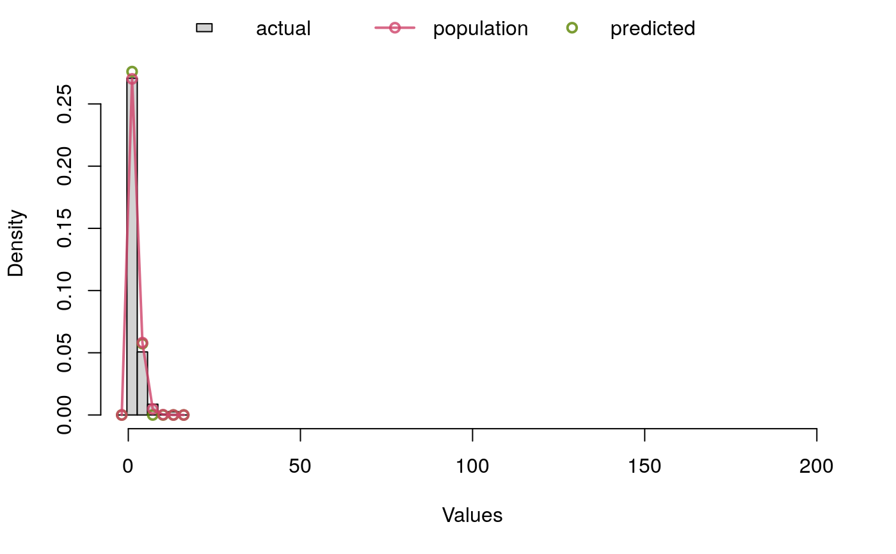

convreg.RdConvolutive regression function
convreg( formula.resp, formula.mu1 = ~1, formula.sigma1 = ~1, formula.mu2 = ~1, formula.sigma2 = ~1, data, dist1 = "Nbinom", dist2 = "Gauss", fixed = NULL, na.action, method = "mle", debug = FALSE, quiet = TRUE, weights = NULL, scale = FALSE, scaleInit = 1, ... )
| formula.resp | response |
|---|---|
| formula.mu1 | formula for variable1 expectation |
| formula.sigma1 | formula for variable1 variance |
| formula.mu2 | formula for variable2 expectation |
| formula.sigma2 | formula for variable2 variance |
| data | dataset |
| dist1 | chain of character to idnetify the distribution of variable1 |
| dist2 | chain of character to idnetify the distribution of variable2 |
| fixed | set the parameters that are fixed to some specified values |
| na.action | action for NA values |
| method | estimation method |
| debug | getting into the function |
| quiet | display comments. |
| weights | weights. |
| scale | Should the observations be scales |
| scaleInit | Initial value of the scaling. |
| ... | additional parameters |
set.seed(123) e=0.75+rnorm(n=500,mean=0,sd=0.25) x1 = rnorm(500,0,0.5) x2 = runif(500,-2,1) k= rnbinom(500,mu=exp(x2),size=1.5) y= data.frame(obs=(k + e) , f1 = x1, f2 = x2) par(mfrow = c(1,1), mar = c(5,4,4,2)) hist(y$obs, breaks = seq(min(y$obs)-1.5, max(y$obs)+3, 3), xlim = c(0,14*24))res.reg.em =convreg( ~obs, formula.mu1 =~ f2, formula.mu2 =~ f1, data=y, dist1 = "Nbinom", method = "mle")#> Warning: NaNs producedres.reg.em#> #> Call: #> convreg(formula.resp = ~obs, formula.mu1 = ~f2, formula.mu2 = ~f1, #> data = y, dist1 = "Nbinom", method = "mle") #> #> Theta_mu1: #> [1] 0.09393558 1.07933245 #> #> Theta_mu2: #> [1] 0.74003615 -0.04723538 #> #> Degrees of Freedom: 499 Total (i.e. Null); 494 Residual #> AIC: 1190.69 #> Log-Likelihood: -589.3449summary(res.reg.em)#> -------------------------------------------- #> Convolution Regression Results #> MLE, Nbinom/Gauss #> Return code 0: #> Log-Likelihood: -589.3449 #> 6 free parameters #> #> Estimates: Nbinom #> Estimate Std.Error Low Upp t.value #> mu 1: (Intercept) 0.0939356 0.0487042 -0.0015247 0.1893958 1.9286951 #> mu 1: f2 1.0793325 0.0663368 0.9493124 1.2093525 16.2704991 #> sigma 1: (Intercept) 11.5892481 NA NA NA NA #> p.value #> mu 1: (Intercept) 0.0543 #> mu 1: f2 0.0000 #> sigma 1: (Intercept) NA #> #> Estimates: Gauss #> Estimate Std.Error Low Upp #> mu 2: (Intercept) 0.7400362 0.0133833 0.7138049 0.7662674 #> mu 2: f1 -0.0472354 0.0269647 -0.1000863 0.0056155 #> sigma 2: (Intercept) -1.4131854 0.0354138 -1.4825965 -1.3437743 #> t.value p.value #> mu 2: (Intercept) 55.2955657 0.0000 #> mu 2: f1 -1.7517466 0.0804 #> sigma 2: (Intercept) -39.9049010 0.0000 #> --------------------------------------------